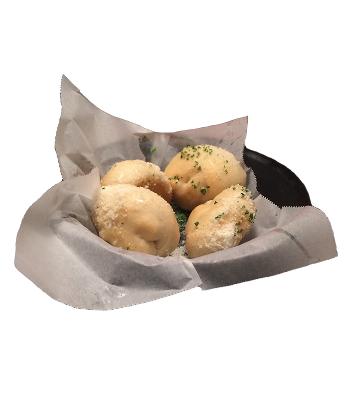

Ippolito's Garlic Rolls
If you're the kind of person that judges restaraunts by the quality of their free bread, you will find salvation at Ippolito's. Their Garlic Rolls are light and flaky on the outside and fluffy on the inside. They're seasoned with parsley and parmesan and come served with a beautiful marinara sauce.